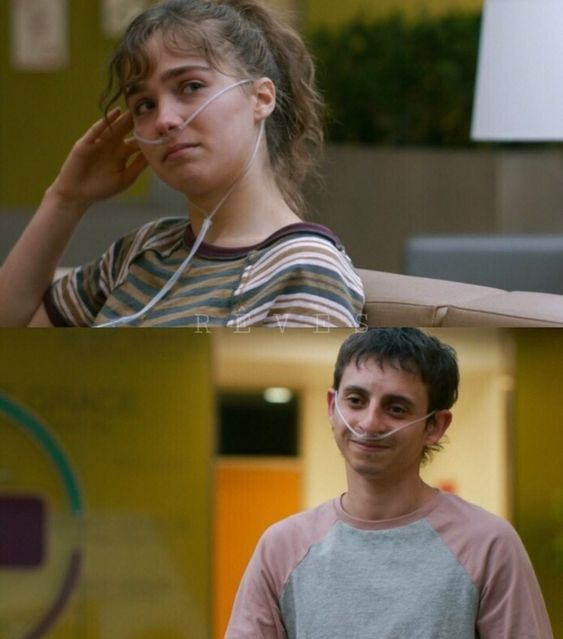
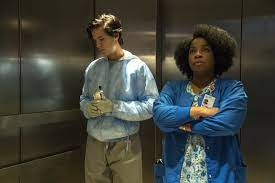

Chapter 1
Stella Grant, a high school senior with cystic fibrosis, begins another stay in the hospital after developing a fever and a sore throat. Stella decorates her hospital room as she always does:
Chapter 2
The handsome stranger, Will Newman, follows Stella as he kills time while his friends, Jason and Hope, are in his room.
Chapter 3
Barb warns Stella to stay away from Will, as Stella would be taken off the transplant list if she contracted B.
Chapter 4
Will has been awake all night watching Stella's videos. He watches one video where Stella is filming her father and her sister, Abby, performing onstage.
Chapter 5
Stella feels incensed that Will is taking his spot in the clinical trial for granted and leaves.
Chapter 6
Will follows her to the NICU, where Stella explains that she goes there to remind herself that even newborn babies have the instinct to keep themselves alive
Chapter 7
While Will and Poe keep watch for the nurses in the hallway, Stella sets up the med cart in Will's room and her app on his phone.
Chapter 8
Stella Skypes Will to make sure he is following their regimen and says they will do all of their treatments together going forward.
Chapter 9
Stella suggests that her mother and father are both suffering from the divorce, but her mother deflects.
Chapter 10
Stella suggests that her mother and father are both suffering from the divorce, but her mother deflects.

Chapter 11
Stella texts Poe to meet her in the multipurpose lounge and tells him of her guilt over not being with her sister when she died.
Chapter 12
Waiting for a response from Stella, Will wanders around the hospital. Walking by the chapel, he hears Poe on the phone talking to his mother.

Chapter 13
Will tells her he figured out this is Stella's first surgery without Abby and starts singing the song that Abby used to sing to Stella.
Chapter 14
He realizes that he should be taking better care of himself instead of relying on Stella.
Chapter 15
Stella wakes up after the surgery and, after being returned to her room, finds a drawing from Will. She calls Will and leaves a voicemail before falling asleep.
Chapter 16
Sitting on the roof of the hospital, Will listens to the voicemail Stella left him after her surgery and watches her working on her computer in her room.
Chapter 17
Finally, Stella does not wish she were anywhere else but the hospital, not even in Cabo with her friends.
Chapter 18
Stella tells Will she has been coming to the hospital since she was six years old, and Will tells Stella about his father, who left once Will got sick.
Chapter 19
As they move closer to each other, Stella receives a text from Poe saying that Barb is looking for them.
Chapter 20
Will's mother argues that she is trying to fight for him, and Will retorts that his mother does not know him and sees only his disease.
Chapter 21
Poe apologizes to Barb but says they had fun.
Chapter 22
While Will waits outside, Stella joins him and says she wants to go see the lights in the park.
Chapter 23
Stella turns off her phone and goes back to Will, deciding not to tell him about her new lungs.
Chapter 24
Will tells her that the lungs can give her a new start, but Stella retorts that they can only give her another five years at most.
Chapter 25
Stella struggles underwater and sees Patches floating away.
Chapter 26
Will, having gotten Stella out of the water, gives her CPR even though he feels the effort will kill him.
Chapter 27
Will tells Stella she must take the lungs.

Chapter 28
Later, Barb tells Will that, for now, Stella does not have B.
Chapter 29
As Stella begins to awaken, Will leaves. Stella opens the package from Will, which contains a sketchbook titled “FIVE FEET APART”
Chapter 30
He notes how much healthier she looks since her transplant surgery.
Release
The novel was published in November 2018 which allowed printing to begin in February of the following year. The first print run consisted of 90,000. These copies were used to promote the upcoming release of the film.
The film was released in the United States on March 15, 2019 by CBS Films via Lionsgate.